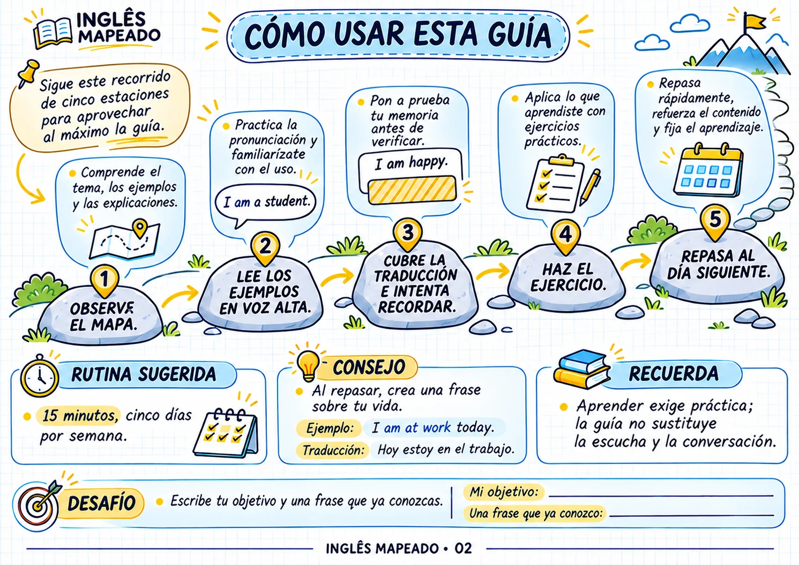
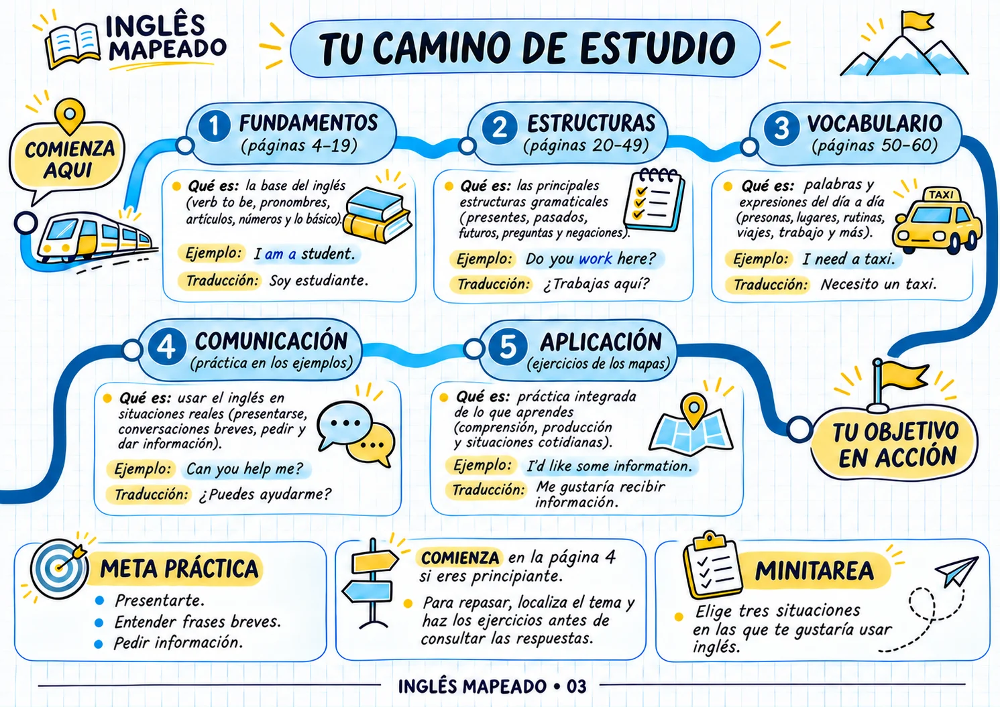
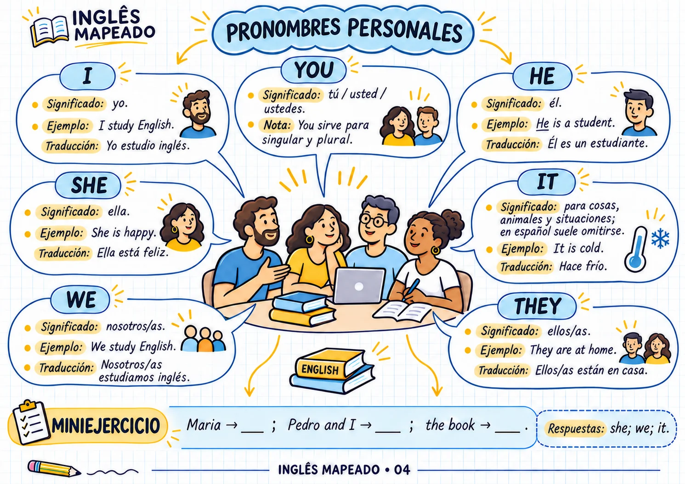
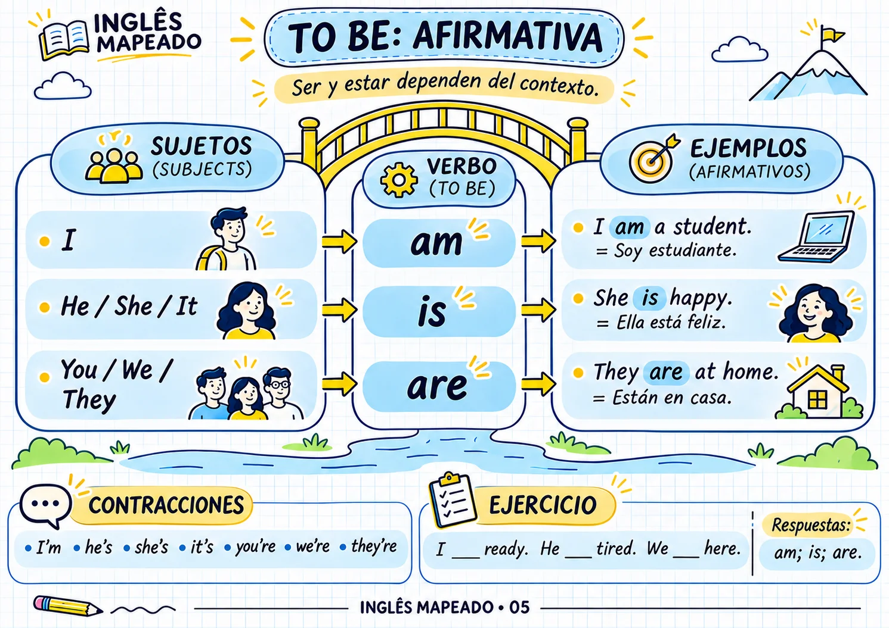
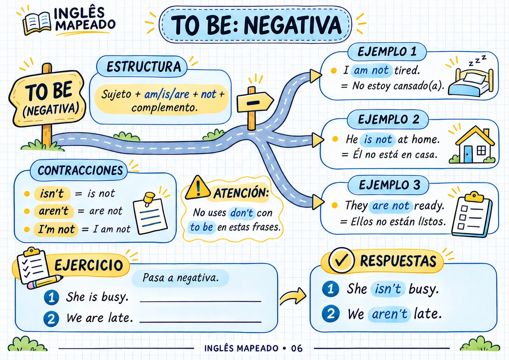
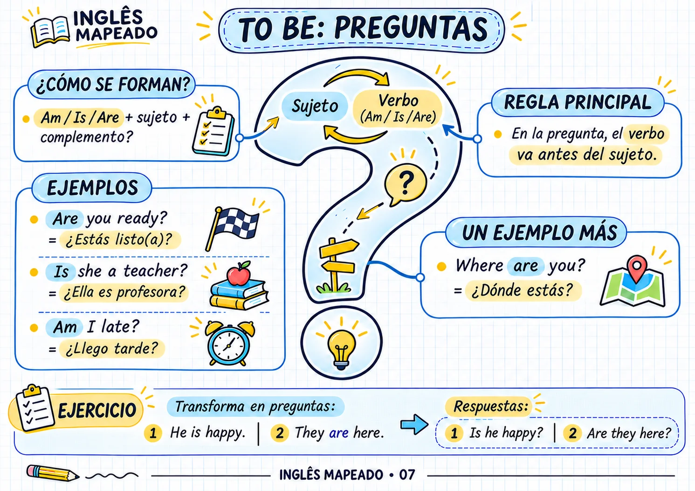
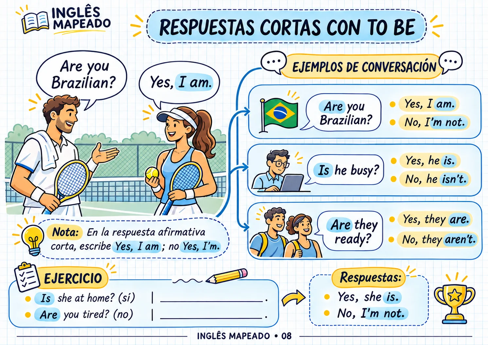

OBSERVA
Comprende el tema de forma visual.
Comprende los fundamentos, la gramática, el vocabulario y las situaciones cotidianas con explicaciones ilustradas, ejemplos y ejercicios prácticos.
Páginas visuales creadas para ayudarte a comprender, practicar y repasar inglés sin depender de explicaciones largas y complicadas.







Cada tema combina explicaciones visuales, ejemplos en inglés, traducciones al español y ejercicios para practicar lo aprendido.
Comprende el tema de forma visual.
Consulta ejemplos y traducciones.
Haz ejercicios breves.
Crea frases con lo que has aprendido.
Vuelve al contenido para reforzar lo aprendido.


El material reúne distintas áreas esenciales del inglés para ayudarte a construir una base sólida.
Pronombres · To Be · Artículos · Plurales · Posesivos · Números · Fechas · Horas
Presente simple · Presente continuo · Pasado · Futuro · Comparativos · Superlativos · Present Perfect
Familia · Casa · Ropa · Comida · Trabajo · Ciudad · Transporte · Viajes · Salud
Preguntas · Respuestas · Frases cotidianas · Instrucciones · Situaciones reales
Ejercicios a lo largo del material para repasar lo aprendido.
Una guía visual para quienes desean estudiar inglés de una manera más clara, organizada y práctica.
Ideal para quienes necesitan construir una base y comprender estructuras esenciales sin empezar con explicaciones complicadas.
Consulta una página, repasa un tema y practica sin tener que pasar horas estudiando.
Perfecto para quienes prefieren esquemas, ilustraciones, ejemplos y ejercicios en lugar de páginas llenas de teoría.
Desde los pronombres y el verbo To Be hasta el vocabulario utilizado en viajes, trabajo, salud y situaciones cotidianas.
Inglés con apoyo en español y ejemplos de uso.
Ejercicios prácticos, vocabulario cotidiano y gramática aplicada.
Contenido visual para consultar y repasar.
Estos materiales son opcionales y complementan Inglés Mapeado con conversación, errores comunes, práctica diaria y escritura.

Practica conversaciones en cafeterías, tiendas, restaurantes, hoteles, aeropuertos y en el trabajo. Incluye traducción al español, frases de apoyo y actividades para adaptar los diálogos a tu rutina.
OPCIONAL
Comprende las palabras que generan confusión, las traducciones literales y los errores frecuentes al pasar del español al inglés. Incluye ejemplos visuales, ejercicios y respuestas para practicar.
OPCIONAL
Sigue un plan de actividades breves para saber qué estudiar y cómo practicar cada día. Completa frases, escribe sobre tu rutina, practica en voz alta y sigue tu progreso durante 21 días.
OPCIONAL
Ten ejemplos para WhatsApp, correo electrónico y situaciones profesionales. Aprende a presentarte, pedir información, coordinar horarios, confirmar citas, dar las gracias y pedir ayuda.
OPCIONALRecibe el material principal Inglés Mapeado en formato digital.
De US$ 69,45 por solo
Pago único · Acceso de por vida
Accede a Inglés Mapeado, consulta el contenido y descubre si esta forma visual de estudiar inglés funciona para ti. Si decides que el material no cumple tus expectativas dentro del período de garantía, podrás solicitar un reembolso.
Todo el proceso es digital para que puedas empezar después de la confirmación de la compra.
Una vez aprobado el pago, se habilita el acceso al material.
Recibirás las instrucciones necesarias para acceder a Inglés Mapeado.
Abre el material en un dispositivo compatible y empieza por las primeras páginas de la guía.
Encuentra respuestas a las preguntas más frecuentes sobre Inglés Mapeado.
No. El material comienza con los fundamentos y avanza por distintas estructuras, vocabulario y situaciones de uso.
Sí. Las explicaciones y el contenido de apoyo están dirigidos a personas que hablan español y están aprendiendo inglés.
No. Inglés Mapeado es un material digital visual con explicaciones, ejemplos y ejercicios.
Sí, siempre que utilices un dispositivo compatible con el formato del material.
Sí. A lo largo de la guía encontrarás ejercicios para practicar distintos temas.
Fundamentos, gramática, vocabulario, comunicación y situaciones cotidianas en inglés.
No. Los cuatro materiales complementarios son opcionales y pueden añadirse por separado.
No. El importe indicado corresponde a un único pago.
Sí. La compra cuenta con una garantía de 7 días. Si el material no cumple tus expectativas dentro de ese período, podrás solicitar un reembolso.
El precio promocional de lanzamiento cambiará pronto. Asegura tu acceso ahora de forma segura.
Aprende inglés de forma sencilla, visual y directa.
60 páginas visuales · Acceso digital
✓ Inglés Mapeado — guía visual de 60 páginas
✓ Opcional 01: Habla desde el primer día
✓ Opcional 02: No caigas en estas trampas
✓ Opcional 03: Reto de 21 días
✓ Opcional 04: Mensajes listos en inglés
✓ Garantía de 7 días